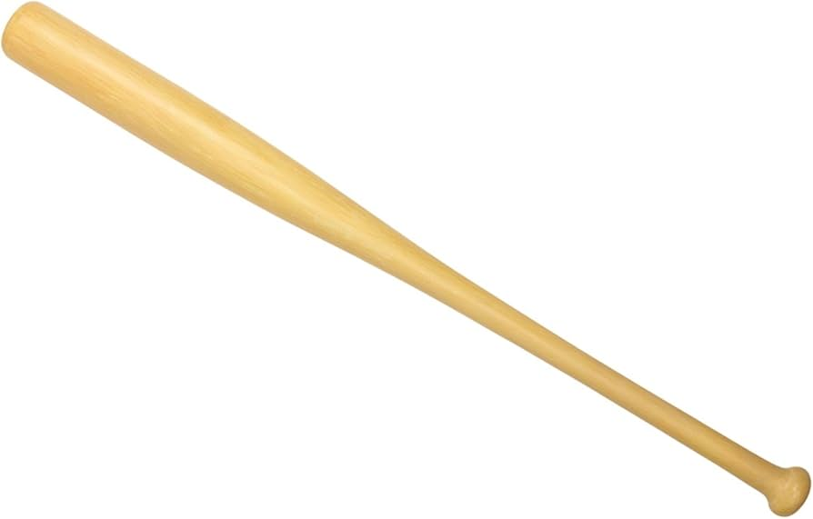
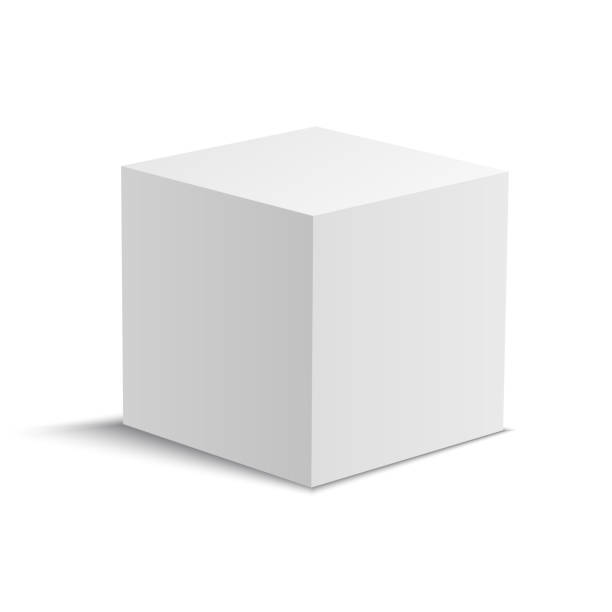
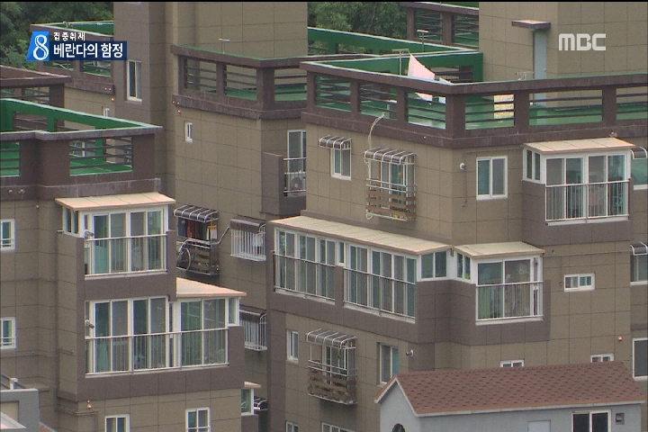
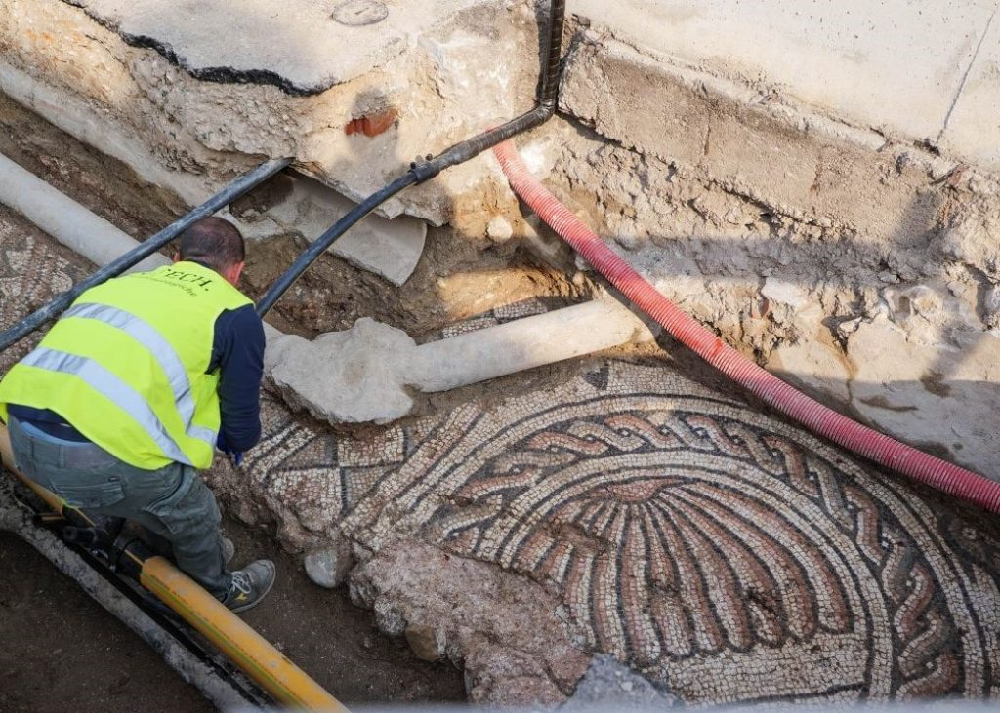
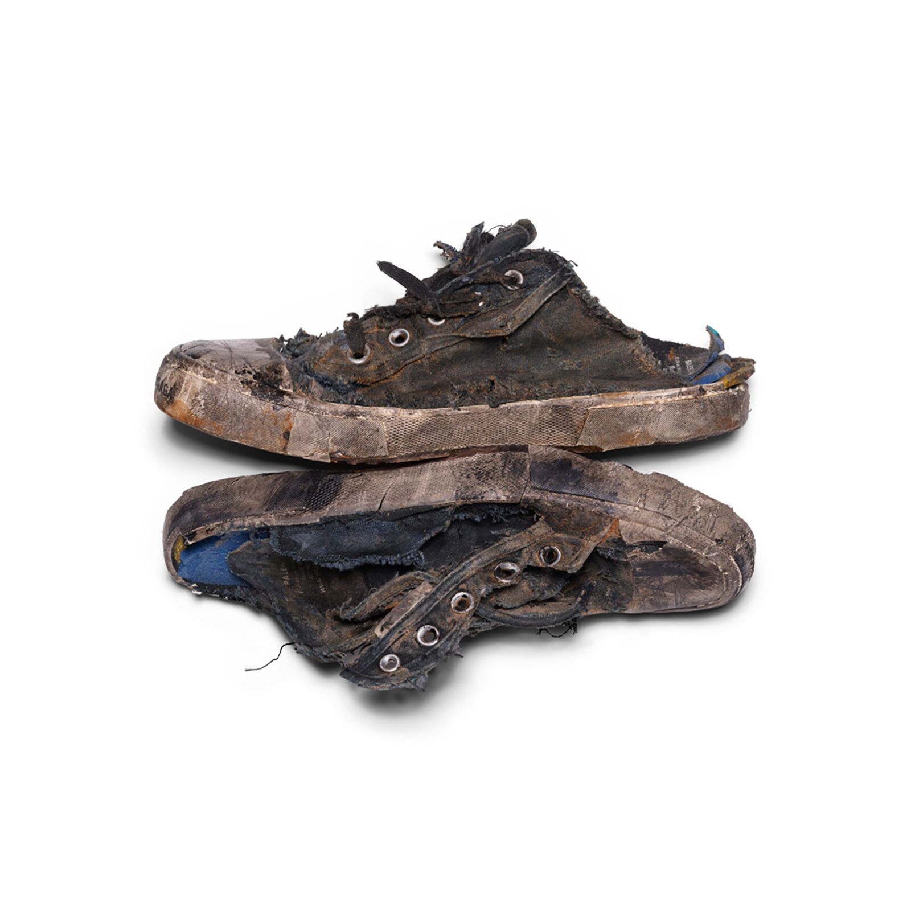
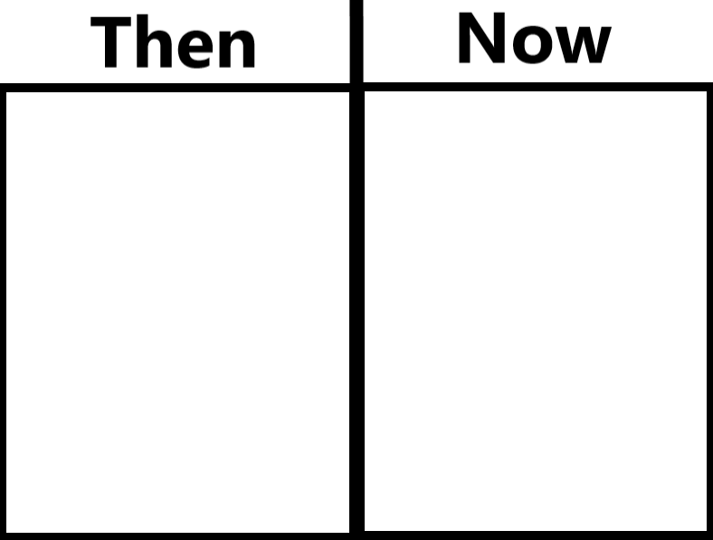
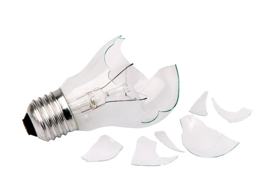
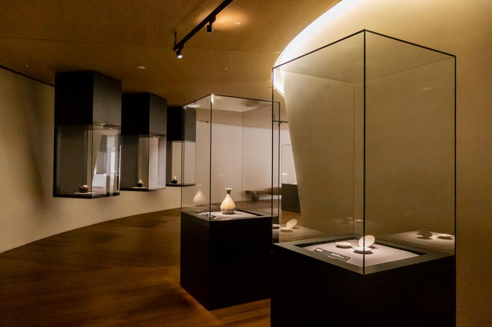

doh lee 도리

Ball Not In Court 영역을 벗어나다
I have a vivid memory of taking a month-long tennis lesson during a high school vacation. I had neither talent nor much interest in tennis, but the teaching of the coach in his late 50s had a profound impact on my life. On the first day of class, I learned how to walk and run sideways and kept hopping on the ground to grasp the rhythm. For a whole week, I didn’t even hold a racket, and only after that did I finally get to hold one. He told me to hold it like a handshake and had me practice swinging without a ball, and only a few days later did I hit a ball in place. The first time I actually hit a ball was thrilling, and though I was horrible at it, I did my best to get the ball into the court. After finishing the in-place practice, I had my first rally with the instructor. He sent the ball slowly, and I, disrespectfully, wanted to beat him. I focused intensely and managed to land the ball in the court successfully, but my joy was short-lived. The instructor shouted at me with an evil look and tone, “Hit it harder! Like baseball!” I thought, I came here to learn tennis, and now he wants me to play baseball. But since I was paying for the lessons, I figured there must be a reason, and I swung with all my strength as if hitting a baseball. None of the footwork, arm movement, or any other techniques I had learned applied. The ball flew over the practice court fence and even reached the soccer field beyond. The instructor didn’t stop me, and I kept hitting home runs until a whole box of balls was gone. It took thirty minutes just to collect the balls, and when I finally put them all back in the box, the instructor said, “You have to hit as hard as you can, otherwise you’ll never know how to hit well later.” At the time, I didn’t fully understand what he meant. It took about fifteen years before I started to grasp it. The power that comes from ignorance is the purest form of strength. If it’s not expressed at first, experience and time consume it, and one may never know that pure strength. Fortunately, though I only understood the instructor’s words tiny bit, the memory remained vivid, and thanks to that, I developed the habit of gauging the extent of my primal, ignorant power in any new study, work, or activity. Beginners have the chance to be forgiven, so they can make full use of their ignorance and test their strength. As time passes, they learn to control that power, but in crucial moments, the strength of ignorance is still necessary. At those times, when experience, time, or skill won’t suffice and only overwhelming force is required, they can wield it because they have tried it before.
고등학교 시절 방학을 맞아 한 달 동안 테니스 과외를 받은 기억이 매우 뚜렷하다. 테니스에는 재능도 흥미도 크게 없었지만, 테니스를 가르쳐 주신 50대 후반의 아저씨의 가르침은 내 인생 전반에 큰 영향을 주었다. 수업 첫날 나는 옆으로 걷고 뛰는 법을 배우고 바닥에서 계속 콩콩 뛰며 리듬을 익혔다. 일주일 동안 라켓은 손에 쥐어보지도 못한 채 시간이 흘렀고, 그제야 라켓을 잡게 되었다. 악수하듯 잡으라 하시고는 공 없이 휘두르는 연습을 시키셨고, 며칠 더 지나서야 제자리에서 공을 쳤다. 처음으로 공을 치는 순간 매우 신이 났고, 잘하지도 못하면서 어떻게든 공을 코트 안으로 보내려고 안간힘을 썼다. 제자리 연습이 끝난 후 처음으로 과외 아저씨와 랠리를 했는데, 아저씨는 공을 천천히 넘겨주셨고 나는 예의 없이 아저씨를 이기고 싶었다. 초집중하여 공을 코트 안으로 성공적으로 넣었지만, 기쁨도 잠시 아저씨가 매서운 눈빛과 말투로 소리쳤다. “세게 치란 말이야! 야구하듯이!” 테니스를 배우러 왔는데 야구를 하라니 무슨 말인가 싶었지만, 돈을 내고 배우는 것이니 이유가 있겠거니 하고 말 그대로 온 힘을 다해 야구처럼 공을 쳤다. 여태껏 배웠던 발 움직임, 팔의 움직임, 그 어떤 기술도 적용되지 않았다. 공은 연습장 펜스를 넘어 그 너머 축구장까지 날아갔다. 아저씨는 막지 않으셨고 공 한 박스가 다 떨어질 때까지 홈런을 쳤다. 공을 줍는 데만 30분이 걸렸고, 모든 공을 박스에 담았을 때 아저씨가 말했다. “가장 세게 쳐봐야 돼, 그래야 나중에 잘 치는 법을 알 수 있어.” 그때는 무슨 말인지 잘 몰랐다. 약 15년이 지나서야 조금 알 것 같다. 무지에서 나오는 힘이야말로 가장 순수한 힘이다. 처음 발현해보지 않으면 경험과 시간이 순수한 힘을 잡아먹고, 나는 영원히 순수한 힘을 알지 못한다. 다행히 아저씨의 말은 이해는 잘 못했지만 내 기억 속에 뚜렷했고, 덕분에 처음 접하는 모든 학문, 일, 활동 전반에서 나의 원초적이고 무지에서 나오는 힘이 어느 정도인지 가늠하는 습관이 생겼다. 초보자는 용서받을 기회가 있으므로, 무지를 크게 활용하며 힘을 시험할 수 있다. 시간이 지나며 힘을 조절하는 법을 배우지만, 아주 결정적인 순간에는 여전히 무지의 힘이 필요하다. 경험이나 시간, 기술이 아닌, 그저 무지막지한 힘이 필요한 순간, 이미 시도해본 사람은 그 힘을 사용할 수 있다.

Why Cuboid? 왜 육면체인가?
When I was in graduate school, a professor gathered the students and asked a question: why are spaces cuboid? A few students answered, and one of them said, “Because curves are difficult.” The professor was ridiculed and responded in a mocking tone. It was an uncomfortable moment for me, and I couldn’t bring myself to speak. Only much later did I arrive at an answer on my own. I think the reason a space became cuboid ultimately comes down to trust issues. In a time before standards existed, when everything relied on guestimation, before currency, in the distant past when people exchanged goods, imagine two people exchanging a watermelon “the size of a head” for a melon “the size of a fist,” using only words and gestures. In such exchanges, a person with a smaller head or fist would always have the advantage, while someone with larger ones would be at a disadvantage. If my head were small, deformed, and soft, I could present a small, damaged, and spoiled fruit and still claim it matched my head, without technically breaking the agreement. On the other hand, if my head were large, regular, and firm, I would be forced to offer consistently large, round, and fresh fruit. This is where the idea of measurement comes in. Without measurement, not only the size and shape but also sweetness, acidity, firmness, color, and texture, basically its aesthetic and tactile qualities cannot be expressed numerically. People are left to judge only by resemblance, and the closest reference is their own body. As a result, those with smaller bodies would have benefited in exchange. At some point, someone must have challenged this unfairness and came up with an average standard rather than individual bodies. Over time, this gave rise to a system of exchange based on specifications, and even to the phenomenon where numbers themselves become names, like 2×4, 24K, or 7-Eleven. Once measurement became the framework, the cuboid proved especially convenient compared to other shapes. It can be intuitively understood in terms of width, length, and height; easy to measure with a ruler; and straightforward to calculate area and volume. It is also easy to compare sizes by placing objects side by side, and practical to stack, store, or orient in different ways. Also, cuboid objects can be stored with minimal wasted space if a storage space is also cuboid. Moreover, when cuboid materials are joined without cutting or trimming, they naturally form right angles, making it easy to construct cuboid spaces. But, cuboid spaces are not always the easiest to build. For example, a conical structure does not require a separate roof (roof is usually the hardest to build due to gravity), and its radial naturally creates a slope, making it more resistant to rain and snow. Structurally, it can also be more resilient against wind and impact than vertical walls. Indeed, early forms of dwellings across cultures and eras often took on conical shapes. This may be because the concept of measurement was still blurry at the time, and the distrust that arises from its absence would have been less pronounced. That said, the reason space became cuboid may stem from the emergence of measurement as a way to establish trust in systems of exchange. And among all possible forms, the cuboid was the easiest and most unambiguous shape to which those measurements could be applied.
대학원을 다닐 시절 교수님이 학생들을 불러 모아 놓고 질문을 하나 했다. 왜 공간은 육면체일까? 몇몇 학생들이 대답을 했고, 어느 한 학생의 답변은 이랬다. “곡선은 귀찮으니까요.” 교수님은 그 대답을 듣고 매우 어이없어하며 조롱 섞인 말투로 되받았다. 불편했던 자리였기 때문에 나는 대답을 하지 못했고, 많은 시간이 지나서야 혼자서 답을 내리게 되었다. 육면체가 된 이유는 결론적으로 신뢰의 문제에서 왔다고 생각한다. 그 어떤 것도 규격이라는 개념이 없던 시절, 모든 것이 어림짐작에 의존하던 때, 화폐도 없고 물물교환을 하던 아주 먼 옛날 두사람이 말과 몸짓으로 머리통만 한 수박과 주먹만 한 참외를 교환하는 모습을 상상해보자. 수박과 참외를 교환할 때 머리통과 주먹이 작은 사람은 항상 유리하고, 큰 사람은 불리할 수밖에 없다. 머리통이 작고 일그러져 있으며 물렁하다면, 작고 상품 가치가 떨어지며 상한 과일을 내놓아도 내 머리와 비슷하다고 주장할 수 있어 약속을 어긴 것이 아니게 된다. 반대로 머리통이 크고 반듯하며 단단하다면, 항상 크고 상품가치가 높고 신선한 과일을 내놓아야 하는 불이익을 감수해야 한다. 여기서 치수의 개념을 생각해볼 수 있다. 치수가 없다는 것은 과일의 형태와 크기뿐 아니라 당도, 산도, 경도, 색감, 질감 같은 미적, 촉각적 요소도 수치로 표현할 수 없다는 뜻이다. 결국 사람들은 ‘무엇과 비슷한가’라는 비교 개념으로만 판단할 수밖에 없었고, 가장 가까운 기준이 자신의 몸이었기 때문에 상대적으로 작은 사람이 교환에서 이득을 취하기 쉬었을 것이다. 어느 순간 누군가는 이런 불공정을 문제 삼았을 것이고, 개인의 몸이 아닌 평균적인 기준을 수치화하려는 시도가 등장했을 것이다. 그렇게 시간이 흐르며 우리는 규격과 단위를 기반으로 물건을 교환하는 사회에 이르렀고, 2X4, 24K, 7-Eleven 처럼 수치 자체가 이름이 되는 현상도 나타났다. 수치가 기본적인 틀이 되었을 때 육면체는 다른 다각형에 비해 가로, 세로, 높이로 직관적으로 이해하기 쉽고, 자로 재기도 간편하며, 면적과 부피을 계산하기도 쉽다. 크기를 비교할 때도 나란히 두면 한눈에 파악할 수 있고, 눕히거나 세우기도 편하다. 또한 창고가 정육면체 공간이라고 가정하면 빈틈없이 보관하기에도 유리하다. 육면체 자재를 별다른 가공 없이 맞붙이면 자연스럽게 90도의 각이 만들어져 육면체 공간을 이루기 쉽다. 하지만 공간을 만드는 데 있어 육면체 구조가 항상 더 쉬운 것은 아니다. 예를 들어 원뿔형 구조는 천장을 따로 만들 필요가 없고, 기둥들이 원형으로 서로 지지하며 자연스럽게 경사를 이루기 때문에 비나 눈에 강하고 구조적으로도 바람이나 충격에 더 유리할 수 있다. 실제로 초기의 주거 형태를 보면 시대와 지역을 막론하고 원뿔형이 많이 등장한다. 이는 당시 수치의 개념이 희미했고, 그로 인해 발생하는 불신 역시 상대적으로 적었기 때문일지도 모른다. 결국 공간이 육면체이 된 이유는 물물교환의 시대에 신뢰를 확보하기 위해 치수라는 개념이 만들어지면서 시작되었을 것이고, 그 치수를 가장 쉽고 명확하게 적용할 수 있는 형태가 육면체이었기 때문이라고 볼 수 있다.

Interiorize 내부화
In South Korea, the practice of converting balconies into interior space has long been normalized. Not only balconies, but also the single corridor apartment blocks are often enclosed with windows and absorbed into interior space. Even exterior staircases are frequently enclosed and internalized. Pretty much all outdoor spaces are converted into interior ones. From an architect’s perspective, this is a terrifying story. But at the same time it is understandable when considering Korea’s cultural context and climate. Beyond the simple issue of heat and cold, fine dust and yellow dust discourage everyday outdoor activities, and spending time on a balcony while wearing a mask can feel awkward. Culturally, in Korea there is a general preference against tanning, making it not so common to see people actively enjoying sunlight. Even indoors, there is a tendency to apply sunscreen, which makes freely occupying sun-filled outdoor spaces require additional effort. On top of that, when combined with a lifestyle that relies heavily on heating and air conditioning, frequently opening and closing doors becomes inefficient in terms of energy use. Outdoor spaces are also vulnerable to insects, particularly mosquitoes, which are among the most hated pests in Korea. As these factors accumulate, the decision to absorb exterior spaces into the interior becomes almost inevitable, even rational. While such modifications are often illegal, they create the illusion of expanded space at relatively low cost. In a society like Korea, where a significant portion of wealth is tied to real estate, the perception of living in a larger space can provide psychological satisfaction. Ironically, those who actively use balconies as outdoor spaces often become the subject of complaints. Grilling meat, hanging laundry that affects the building’s appearance, or even doing light exercise can all trigger complaints, whether for odor, aesthetics or noise reasons. In such an environment, who would choose to use outdoor space? Yet from an architectural standpoint, this still remains a troubling condition. Exterior space is one of the most fundamental interfaces through which publicness can emerge. As all spaces become internalized, the opportunities for individuals to encounter the public inevitably diminish. To be honest, this may not be the true reason. I think that architects’ frustration stems from their own education, where the blurred boundary between exterior and interior is treated as an absolute rule, almost like the Code of Hammurabi. The concept has frequently been delivered without sufficient reflection, and has been accepted less as a subject of critical understanding than as an unquestioned premise. If exterior space is to remain truly exterior, architects themselves must engage more deeply with its necessity. Rather than accepting at face value, there must be an active process of questioning and understanding the reasons behind them.
한국에서 베란다를 거실로 확장하여 사용하는 것은 이미 오래전부터 통상화되었다. 베란다뿐만 아니라, 과거의 일자형 복도식 아파트 역시 창을 달아 내부 공간으로 사용하고, 외부 계단조차 창을 설치해 내부화하는 경우가 많다. 외부로 보이는 거의 모든 공간을 내부로 만들려는 경향이라고 볼 수 있다. 이러한 현상은 건축가의 시선에서는 비통하게 느껴질 수 있다. 그러나 곰곰이 생각해보면 한국의 정서와 기후를 고려할 때 어느 정도는 이해 가능한 측면도 있다. 단순히 덥고 추운 문제를 제외하더라도, 미세먼지와 황사는 일상적인 야외 활동을 꺼리게 만들고, 마스크를 착용한 채 베란다에 나와 시간을 보내는 것은 어딘가 어색하게 느껴질 수 있다. 또한 한국에서는 피부가 타는 것을 선호하지 않는 문화적 특성상, 적극적으로 햇빛을 즐기는 모습또한 흔하지 않다. 심지어 실내에서도 자외선 차단제를 신경 쓰는 문화적 특성상 햇빛이 가득한 외부공간을 편히 사용한다는것은 큰 노력이 발생할수있다. 여기에 냉난방을 수시로 사용하는 생활 방식까지 더해지면, 외부와 연결된 문을 자주 여닫는 행위는 에너지 효율 측면에서도 불리하다. 야외 공간은 벌레, 특히 모기의 문제에서도 자유롭지 않다. 이런 여러 요인들이 결합되면서, 외부 공간을 내부로 흡수하려는 선택은 합리적인 것으로 받아들여질수밖에 없다. 안타깝게도, 외부를 내부로 사용하는것은 대부분 불법이지만, 현장 점검이나 신고가 없는 한, 비교적 적은 비용으로 더 넓은 공간을 사용하는 효과를 누릴 수 있다는 점에서 일종의 공간 확장 착각을 불러일으킨다. 부동산 자산의 비중이 큰 한국 사회에서는, 넓은 공간에 거주한다는 감각 자체가 심리적인 만족으로 이어질수있다. 가장 어이없는 상황은 베란다를 외부로 적극 활용하는 사람들은 오히려 민원의 대상이 된다. 고기를 굽거나, 빨래를 널어 외관을 해친다는 이유, 혹은 가벼운 운동조차도 소음을 준다는 이유로 민원이 발생한다. 결국 외부 공간을 사용하는 행위가 제약을 받는 상황이 벌어진다. 이런 환경에서 누가 적극적으로 외부를 원하겠는가? 그러나 건축가의 입장에서는 여전히 비통한 지점이다. 외부 공간은 공공성을 발현할 수 있는 가장 기본적인 접점이기 때문이다. 모든 공간이 내부화될수록, 개인이 공공과 마주할 가능성은 줄어들 수밖에 없다. 이러한 이유들은 다소 이론적인 설명에 불과하고, 솔직히 말하자면, 건축 교육 과정에서 내부와 외부의 경계를 허무는 개념을 주입식으로 학습해왔기 때문일지도 모른다. 이 개념은 충분한 성찰 없이 전달되었고 당연한 전제처럼 받아들여져 왔다. 결론적으로, 외부를 외부로 남겨두기 위해서는, 건축가 스스로 외부 공간의 가치와 필요성에 대해 더욱 깊이 관찰하고 고민할 필요가 있다. 단순히 교육받은 개념을 암기하듯 받아들이는 것이 아니라, 그 이유를 스스로 납득하는 과정이 필요하다.

Overlaying 덧방
I still remember a scene from an old news report: instead of removing the existing asphalt, they kept adding new layers on top, causing the road level to rise little by little. Eventually, a large vehicle tried to pass under an overpass and crashed into it. Because the asphalt had been repeatedly overlaid without being removed, the clearance between the road and the overpass kept shrinking, ultimately leading to the accident. The fact that this memory remains so vivid, even though I saw it before I entered elementary school, suggests how ridiculous I must have felt at the time. In interior design, the concept of overlaying, applying new finishes over existing ones, is still widely accepted without much concern. Once the final finish is installed, it is often difficult to tell whether it was overlaid or not. From the perspectives of cost and time, overlaying is generally more efficient, and adhesive technologies that allow new materials to be applied continue to improve. In Europe, there were cases where, during the restoration of old buildings, layers of finishes are carefully removed one by one, only to reveal layers of archaeological significance. From this point of view, overlaying can also serve to preserve past materials, almost like a mummy. Even so, many architects tend to value maintaining a sense of purity and feel a kind of aversion to the idea of layering finishes. For architects, this may be why there is a tendency to remove existing materials during interior work. Of course, clearing everything out and starting fresh opens up more design possibilities and provides an opportunity to erase the traces of previous designers and fill the space with their own voice. From a maintenance and technical standpoint as well, removal is a safer and more precise option. It can also be difficult to fully understand existing conditions when producing drawings, making demolition a more reasonable approach. Sometimes, I imagine this scenario: like repeatedly laying asphalt over asphalt, what if a single space were continuously overlaid with new finish materials for hundreds of years? Over time, a 1,200 square feet space would gradually shrink to 900 square feet, and eventually shrink to a size just enough for a single hamster to live in. Layer upon layer, the finishes would slowly consume the space. I find myself hoping that some architect would carry this process through without interruption, continuing to build up layers instead of demolishing them. Perhaps, hundreds of years later, it would become a space where the accumulation of time holds historical value.
옛날 뉴스에서 본 장면이 아직도 기억난다. 아스팔트를 걷어내지 않고 그 위에 계속 덧씌우는 바람에 도로 높이가 점점 올라가고, 결국 큰 차량이 육교를 지나가다 육교와 충돌하는 사고가 발생했다는 내용이었다. 기존 아스팔트를 제거하지 않은 채 덧씌우기를 반복하다 보니, 육교와 도로 사이의 간격이 점점 줄어들었고, 그 결과 사고로 이어졌다는 이야기였다. 초등학생이 되기 전에 본 아주 오래된 기억인데도 또렷하게 남아 있는 걸 보면, 당시 꽤나 어이없게 느꼈던 모양이다. 인테리어에서는 덧방이라는 개념이 지금도 큰 문제의식 없이 사용된다. 최종 마감재가 설치되고 나면 그것이 덧방인지 아닌지 구분하기 어렵기 때문에, 굳이 기존 마감재를 철거할 필요가 줄어든다. 비용과 시간 측면에서 덧방은 대체로 효율적이며, 기존 재료 위에 부착할 수 있는 접착 기술 역시 점점 발전하고 있다. 유럽에서는 오래된 건축물을 복원하기 위해 마감재를 하나씩 뜯어내다가, 고고학적으로 의미 있는 더 오래된 층을 발견하는 경우가 있다. 이런 관점에서 보면 덧방은 마치 미라처럼 과거의 재료를 보존하는 역할을 하기도 하며, 역사적 측면에서 꼭 부정적으로만 볼 필요는 없다. 그럼에도 건축가들 사이에서는 순수한 상태 를 유지하려는 태도와, 마감재를 덧대는 방식을 인위적인 화장처럼 여겨 혐오감을 느끼는 경향이 있다. 그래서 인테리어 작업을 할 때 기존 재료를 철거하려는 습성이 생기는것같다. 물론 기존 것을 깨끗이 철거하고 새로 시작하면 디자인적으로 더 많은 가능성이 열리고, 이전 디자이너의 흔적을 지운 채 자신의 언어로 공간을 채울 수 있는 기회가 된다. 유지보수나 기술적인 측면에서도 철거가 더 안전하고 정확한 선택일 수 있으며, 도면 작업을 할 때도 기존 상태를 완벽히 파악하기 어렵기 때문에 철거가 합리적인 방법이 되기도 한다. 가끔은 이런 상상을 해본다. 아스팔트 위에 덧씌우기를 반복하듯, 하나의 공간에 수백 년 동안 마감재를 계속 덧대는 것이다. 그렇게 시간이 흐르면 34평이던 공간은 25평으로 점점 줄어들고, 마침내는 햄스터 한 마리 정도만 겨우 살 수 있을 만큼 작은 크기로 쪼그라들고 말것이다. 누군가가 그 과정을 중간에 멈추지 않고, 철거 대신 끝까지 덧방을 이어가 주었으면 한다. 그래서 수백 년 뒤에는 시간의 층위가 축적된, 그 자체로 하나의 역사적 가치를 지닌 공간이 되기를 바란다.
To Clothe, To Eat, To Live 의,식,주
Before understanding how to experience space, there is something we need to know first: the three essential elements for survival, to clothe(衣), to eat(食), and to live(住). To clothe(衣) encompasses all activities related to wearing, and maintenance of garments for physical protection and self-expression. Imagine a person wearing the most common outfit with an umbrella. An umbrella prevents the body from getting wet in the rain, which could lower body temperature, weaken immunity, and lead to illness. Shirts and pants protect the body from wind, dust, debris, and contaminants that may cause physical injury. Shoes prevent cuts to the feet from sharp ground, reducing the risk of viral infection. A hat protects facial skin from ultraviolet rays, preventing aging and pigmentation. A watch helps prevent missed appointments that could ruin social relationships. Glasses prevent blurred vision, eye strain, headaches, and potential safety accidents. In cities, there are plenty of opportunities to experience and consume clothing, and its major advantage is that it goes beyond protection and survival. It enables self-expression and social function. Individuality, taste, emotion, social status, a sense of belonging, psychological satisfaction, and diversity can all come immediately upon consumption. The moment it is consumed, it becomes one’s own, and with proper care, it can be experienced semi-permanently, making clothing a highly cost-efficient activity. Food(食) includes all activities related to the consumption of food supporting health and quality of life. Imagine the most common instant noodle as an example. The noodles provide energy, preventing fatigue, dizziness, and reduced concentration caused by deficiency, while the protein helps prevent muscle loss, delayed growth, weakened immunity, and slow wound recovery. Vitamins added to ramen help prevent inflammatory skin conditions, and the broth provides hydration, preventing headaches, fatigue, and even life-threatening conditions caused by dehydration. In cities, there are plenty of opportunities to experience and consume food. Beyond health and survival, its major advantage lies in the chemical pleasure derived from taste. Sweetness, saltiness stimulate dopamine. Food like chocolate and nuts trigger serotonin release, caffeine and glucose activate brain function, and food rich in omega-3 and antioxidants support memory and cognition. Consumption becomes not just a sensory experience but a chemical one within the body, where it is absorbed and becomes part of oneself, making food a highly proactive activity that directly stimulates the brain and internal organs. To live(住) refers to all activities related to the organization and management of space, forming a way of living that ensures safety and comfort. Imagine the most common single-family house. The foundation prevents collapse caused by ground movement or subsidence, columns and walls support the structure and prevent tilting or failure, the roof protects against rain, snow, wind, and sunlight, preventing heatstroke, the floor supports body weight and absorbs impact to prevent falls and injuries, and railings prevent accidents from falling. In cities, while it is possible to experience space, opportunities to truly consume it are rare, and owning spaces beyond basic safety and comfort often requires economic privilege. Unlike clothing, individuality and taste do not come directly on the body, and unlike food, the experience is not really about chemical sensation. Space extends beyond home to include workspaces, leisure spaces, learning environments, transportation spaces, and commercial spaces, essentially all spaces throughout life. The chinese character “住” means “to live,” not simply “house,” reinforcing this idea. Because most spaces are shared rather than owned, they require public-mindedness and moral awareness, and since they are expensive, difficult to consume, less visibly expressive, and offer ambiguous pleasure, space is often less appreciated. But, I believe there is a joy that only spatial experience can provide. It begins in stillness. Standing, walking, sitting, or lying down while idly experiencing space, focusing on every sense the body can embrace. Seeing, hearing, smelling, touching, sensing temperature, feeling wind, perceiving resonance, detecting air pressure, and experiencing light. A form of awareness that emerges only in a state close to that of a monk.
공간을 경험하는 방법을 알기 전에 짚고 넘어가야 할 것이 있다. 그것은 생존을 위한 필수적인 세 가지 요소, 의(衣),식(食),주(住)이다. 의(衣)는 옷의 선택, 착용, 관리 등과 관련된 모든 활동으로, 신체 보호와 표현을 포함한 생활이다. 상, 하의를 갖춘 기본적인 착장을 한 사람을 예시로 들겠다. 우산은 비를 막아 몸이 젖어 체온이 내려가 면역력이 흔들려 감기에 걸리는 것을 방지한다. 상의와 하의는 바람, 먼지, 파편, 오물 등이 나의 몸에 상처를 입히는 것을 방지한다. 신발은 뾰족하고 날카로운 지면으로부터 발에 상처가 나 바이러스가 침투하는 것을 방지한다. 모자는 자외선으로부터 얼굴 피부의 노화 및 착색을 방지한다. 시계는 약속을 어겨 인간관계가 뒤틀리는 것을 방지한다. 안경은 사물이 흐릿하게 보이고 눈의 피로, 두통 및 안전사고가 생기는 것을 방지한다. 도시에는 의생활을 체험하고 소비할 수 있는 기회가 많다. 자신을 보호하고 생존을 넘어 자기표현과 사회적 기능까지 가능하다는 것이 큰 장점이다. 개성, 취향, 감정, 사회적 지위, 소속감, 심리적 만족감, 다양성 등 이 모든 것들은 소비하는 즉시 발현될 가능성이 높다. 소비하는 순간 자신의 것이 되며, 관리에 따라 반영구적으로 체험 가능하다. 이런 면에서 의생활은 다목적적이며 비용 효율이 높다. 식(食)은 음식의 선택과 섭취, 식습관 등을 포함한 모든 활동으로 건강과 삶의 질을 위한 종합적인 생활이다. 완전식품 라면을 예시로 들겠다. 면은 에너지가 부족해 쉽게 피로해지고 어지럼증이나 집중력이 저하되는 것을 방지한다. 면에 포함된 단백질은 근육 감소, 성장 지연, 면역력 약화, 상처 회복 지연을 방지한다. 면에 참가된 비타민은 피부에 염증성 질환을 방지한다. 국물의 수분은 탈수로 인해 두통, 피로, 어지럼증이 생기고 심하면 생명에 위험이 되는 것을 방지한다. 도시에는 식생활을 체험하고 소비할 수 있는 기회가 많다. 자신의 건강과 생존을 넘어 맛을 통해 화학적 쾌감을 느낄 수 있다는 것이 큰 장점이다. 단맛, 짠맛, 감칠맛 등을 느끼면 도파민이 자극되고, 초콜릿이나 견과류 등 특정 음식 섭취 시 세로토닌이 분비되며, 카페인과 포도당은 뇌 기능을 활성화한다. 오메가-3와 항산화 물질이 풍부한 음식은 기억력과 인지 기능을 지원한다. 소비하는 순간 시청각을 넘어 화학적으로 체내에서 경험할 수 있으며, 흡수되어 자신의 것이 된다. 이런 면에서 식생활은 뇌와 장기를 직접적으로 자극할 수 있는 매우 능동적인 활동이며 비용 효율이 높다. 주(住)는 공간의 선택·구성·관리 등과 관련된 모든 활동으로, 안전하고 쾌적한 생활을 위한 방식이다. 상상했을 때 떠오르는 기본적인 주택 형태를 예로 들겠다. 기초는 땅의 흔들림이나 침하로 인해 건물이 무너지는 붕괴 사고를 방지한다. 기둥이나 벽은 지붕과 상부 구조물이 무너지거나 기울어지는 것을 막는다. 지붕은 비, 눈, 우박, 바람, 햇빛을 막아 체온 저하나 열사병을 방지한다. 바닥은 사람이 안전하게 서고 앉을 수 있도록 체중을 지탱하며 충격을 흡수해 넘어짐이나 부상을 방지한다. 난간은 추락 사고를 방지한다. 도시에는 주생활을 체험할 수는 있지만 소비할 기회는 상대적으로 희박하다. 자신의 안전과 쾌적함을 넘어서는 공간을 소비하려면 경제적인 여유가 있거나 자연 속 깊은 곳에 있거나, 혹은 공간적 감각을 지니고 있어야 한다. 의생활처럼 개성과 취향이 몸에서 직접 발현되는 것도 아니고, 식생활처럼 직관적이며 체내에서 느끼는 화학적 감각이 있는지도 명확하지 않다. 주생활은 집을 넘어 업무 공간, 여가 공간, 학습 공간, 교통, 공간, 상업 공간 등 삶 전반에 걸친 모든 공간을 포함한다. ‘주(住)’라는 한자가 ‘집 주’가 아니라 ‘살 주’인 것을 보면 이 말은 타당하다. 주는 대부분 개인의 소유가 아니며 함께 나눠 쓰기 때문에 공적인 태도와 배려, 도덕적 소양도 요구된다. 이처럼 소비하기에는 너무 비싸거나 어렵고, 개성과 취향이 타인에게 잘 드러나지 않으며, 쾌감이나 기쁨을 느끼기에도 모호하고, 도덕적 책임까지 요구되는 주생활은 사랑받기 어렵다. 하지만 나는 공간 체험만이 주는 고유한 기쁨이 있다고 생각한다. 솔직히 그것이 무엇인지 명확히 설명하기는 어렵다. 아무것도 하지 않고 가만히 서 있거나 걷거나 앉거나 혹은 누워서 멍하니 공간을 체험하는 것, 내 몸이 이끌어낼 수 있는 모든 감각에 집중하여 보고, 듣고, 냄새를 맡고, 만지고, 온도를 느끼고, 바람을 맞고, 울림을 느끼고, 공기의 압력을 느끼고, 빛을 체험하는 것. 마치 몽상가에 가까운 상태에서야 비로소 시작되는 공간 경험이다.

Immediately Comfortable 즉시 편안함
When you go to a shoe store to buy shoes and try them on, you try to figure out how comfortable they are. You sit down and put them on, stand up, take a few steps, and sometimes even try a light jog. If they feel tight, you try a larger size. If they feel loose, you try a smaller size. You may undo the laces and press on the insole and outsole with your fingers. Within thirty minutes, you decide on their comfort. If they feel just right, or if you feel sorry for the salesperson who has been helping you, you end up buying them. If you’re lucky, your feet won’t hurt. If you’re not, your little toe or big toe starts to ache, or blisters begin to form on your heels. Your arch may hurt, the width may feel too tight, and in more severe cases, the pain can spread to your ankles, knees, and your spine. This isn’t a surprise. The chances that your feet perfectly match the standardized shoes envisioned by a manufacturer are slim. Even being somewhat close would be considered lucky. But if you keep wearing them for a year or two despite the discomfort, your footprint settles into the shoe, and the shoe stretches to fit the shape of your foot. The sole wears down according to the way you walk, and what was once stiff gradually softens. The upper creases and wrinkles, conforming to your foot. At this point, you could say, “They’ve become comfortable.” That is only half correct. You have adapted, and the shoes have adapted. They have reached a kind of compromise from both sides. Your feet struggled to conform to a factory-made form, and the shoes struggled to accommodate your feet that fall outside the bell curve. This relationship ends when one side can no longer endure. When your body breaks down or the shoes break down. Yet if you seek treatment at a hospital or have the shoes repaired, the relationship continues.
신발을 사러 매장에 가서 착화를 해보면, 얼마나 편안한지 알아보게 된다. 앉아서 신어보고, 서 있어보고, 몇 걸음 걸어보기도 하고, 가끔은 가볍게 뛰어보기도 한다. 타이트하다고 느껴지면 더 큰 사이즈를 신어보고, 헐렁하다고 느껴지면 작은 사이즈를 신어본다. 신발끈도 다시 묶어보고, 손가락으로 안감과 겉감을 눌러보기도 한다. 길어야 30분 안에 편안함을 판단하고, 마음에 쏙 들거나 도와주는 종업원에게 미안한 마음이 들면 결국 구매하게 된다. 운이 좋으면 오래 서 있거나 걸어도 발이 아프지 않을 것이고, 운이 좋지 않으면 새끼발가락이나 엄지발가락이 아프고, 뒤꿈치에 상처가 나기 시작한다. 아치가 아프거나 발볼이 조이기도 하고, 심하면 발목, 무릎, 심지어 척추까지 통증이 이어진다. 이는 어쩌면 당연한 결과다. 당신의 발이 공장에서 만든 표준적인 족형에 정확히 맞을 가능성은 희박하고, 어느 정도 비슷하기만 해도 운이 좋은 경우일 것이다. 하지만 1년, 2년 불편함을 감수하며 계속 신다 보면, 신발은 발 모양에 맞게 늘어난다. 밑창은 걷는 방식대로 닳아가고, 딱딱했던 소재는 점점 부드러워진다. 겉감은 발 모양에 맞춰 주름지고 구겨진다. 이 상태가 되면 “편안해졌다”고 말한다. 하지만 그것은 편안해진 것이 아니라 적응된 것이다. 당신도 적응하고, 신발도 적응한 결과다. 서로가 타협점을 찾아 어느 지점에 도달한 셈이다. 그 과정은 양쪽 모두에게 쉽지 않았을 것이다. 당신의 발은 공장에서 만든 형태에 맞추느라 고생했고, 신발 역시 정규분포에서 벗어난 발에 맞추느라 고생했다. 이 관계는 어느 한쪽이 버티지 못할 때 끝난다. 당신의 몸이 망가지거나, 혹은 신발이 망가지거나. 그러나 당신이 병원에서 치료를 받거나, 신발을 수선집에서 고치게 되면 그 관계는 계속 이어진다.

Natural 자연스러운
The word “natural” is frequently used in the field of plastic surgery. When the surgery is successfully done, the best comment you could receive is, “It looks natural.” This means it appears as if it were originally that way. It is used when aspects such as location, size, proportion, color, and texture blend seamlessly as if they were the person’s own, and when the traces of surgery are not noticeable. The same applies to architectural design. A design is described as “natural” when its location, scale, proportion, color, and texture harmonize well with the surrounding environment, and when the designer’s intent is not exposed. The feeling at such moments is complete comfort, with no sense of unease. Achieving harmony with the surroundings can be refined through experience and skill, but keeping the designer’s intent low-key is extremely difficult. This is not something that can be resolved simply through modesty. Rather, it requires an attitude close to self-denial. Trained architectural designers typically try to incorporate their own ideas or philosophy into their work, yet here they must restrain that impulse. But, this does not mean the problem can be solved by working like a sage emptying their mind. If taken that way, you might even say that it is better not to design at all. For this reason, architects who can produce natural work are inevitably rare. In fact, as time passes and experience accumulates, the opposite often occurs. With seniority, a designer’s ideas and philosophy become more solidified, and opportunities to express them increase, reducing the need to suppress them. Also, from a client’s perspective, a designer’s signature may be more desirable, so the act of denying oneself may appear to them as foolish.
'자연스럽다'는 말이 자주 사용되는 분야는 성형외과이다. 성형수술이 성공적으로 끝났을 때 제 3자에게 흔히 듣는 말은 바로 '자연스럽다'이다. 이 말은 마치 원래 그런것처럼 보인다는 의미다. 위치, 크기, 비율, 색감, 요철감 등이 본인 것처럼 자연스럽게 어우러지고, 수술의 흔적이 지나치게 드러나지 않을 때 쓰인다. 건축 디자인도 마찬가지다. 위치, 크기, 비율, 색감, 요철감 등이 주변 환경과 잘 어우러지고, 디자인 의도가 지나치게 드러나지 않을 때 '자연스럽다'는 평가를 받는다. 이때의 감정은 기시감이나 불편함이 전혀 없고, 온전하고 편안한 마음이다. 주변과의 조화를 이루는 것은 경험과 기술을 통해 연마할 수 있지만, 디자이너의 의도가 과하게 드러나지 않도록 하는 것은 매우 어려운 일이다. 이는 단순한 겸손으로 해결될 수 있는 문제가 아니다. 오히려 자기 자신을 부정하는 수준의 자세가 필요하다. 교육을 받은 건축 디자이너는 보통 디자인에 자신의 아이디어나 철학을 담으려 하지만, 그걸 억제해야 한다는 말이다. 그런다고 해서 현자처럼 평온하게 생각을 비우고 작업한다고 해서 해결되지 않는다. 그럴 경우, 오히려 '디자인을 하지 않는 게 낫다'는 결론에 이를 수 있기 때문이다. 이처럼 자연스러운 작업을 하는 건축 디자이너는 매우 드물수밖에없다. 시간이 지나고 경험이 쌓일수록 오히려 반대의 결과가 나오는 경우가 많다. 연륜이 쌓일수록 아이디어나 철학은 더욱 단단해지고, 그것을 표현할 기회도 많아지기 때문에 이를 억누를 필요성은 줄어든다. 또한 고객의 입장에서 디자이너의 시그니처를 더욱 원할 수 있기 때문에, 자기 자신을 부정하는 행위는 제3자가 볼 때 우매한 짓처럼 보일 수도 있다.

Conceptless 컨셉이 없는
I would like a neat, rectangular room where sunlight filters in at the right time, and a cool breeze enters when the window is open. A room with only the essentials: a simple desk, a comfortable chair, a small desk lamp, bedding, and a wardrobe to store clothes and various tools. When I step out, there is a dining table where I can meet the people who matter to me, and four chairs are enough. The kitchen has a small operable window to keep me company while cooking, and beyond it I hope to see a plain, unspoiled landscape. The small living room is filled with sunlight, with shadows cast on the floor between a few tall trees. It has a small two-seater fabric sofa and a quiet fan, a place where even if I fall asleep, I won’t wake easily. The bathroom has a toilet, a sink, and a bathtub, along with a small window to prevent humidity, and strong water pressure with reliable hot water. Outside, there is a deep overhang that keeps me dry on rainy days, and on clear days, a small outdoor space where I can sit in a chair and simply let time pass. The house I would like has no concept. It is closer to an instinctive, somewhat refined sense of survival.
따스한 햇빛이 제때 스며들고 창문을 열면 시원한 바람이 들어오는, 여름에는 시원하고 겨울에는 따뜻한 바닥을 가진 직사각형의 단정한 방이면 좋겠다. 간소한 책상 하나와 편안한 의자 하나, 작은 책상 램프 하나, 이부자리 하나, 그리고 옷과 각종 도구를 수납할 수 있는 옷장이 전부인 그런 방. 방문을 열고 나가면 소중한 사람들을 만날 수 있는 식탁이 있고, 의자는 네 개면 충분하다. 간단한 식사를 만들 수 있는 부엌에는 요리하며 심심하지 않도록 작은 여닫이 창문이 나 있고, 그 너머로는 인간의 손때가 덜 묻은 담백한 풍경이 보였으면 좋겠다. 작은 거실에는 햇빛이 쏟아지고, 키 큰 나무 몇 그루 사이로 바닥에 그림자가 드리워진다. 2인용 작은 천 소파와 소리가 크지 않은 선풍기가 있고, 가끔 잠이 들어도 쉽게 깨지지 않는 그런 거실이면 좋겠다. 화장실에는 변기와 세면대, 욕조가 있고, 습기가 차지 않도록 작은 창문이 나 있으며 수압이 시원하고 뜨거운 물이 잘 나오면 좋겠다. 집을 나서면 충분한 처마가 있어 비 오는 날에는 옷이 젖지 않고, 화창한 날에는 집 앞 야외 의자에 앉아 멍하니 시간을 보낼 수 있는 외부 공간이 있으면 좋겠다. 내가 살고 싶은 집에는 어떤 컨셉도 없다. 그저 본능적으로 느끼는 다소 고급스러운 생존 본능에 가깝다.

They Say It's Pretty 이쁘다고해
On a weekend afternoon in early December, I went to visit the Leeum Museum in Hannam-dong. I entered the building in the Rem Koolhaas wing and paid 20,000 won ($13.5) for a combined ticket which allowed me to see the exhibitions of traditional art, contemporary art, and the solo exhibition of artist Lee Bul. I started by visiting Lee Bul’s solo exhibition. The space was quite dark, and many people were either whispering or maintaining silence. After taking the escalator to the lower floor, I entered a brighter exhibition space, and the voices of the people grew louder. The most common phrase I heard was “Wow, it's pretty.” After viewing Lee Bul’s exhibition, I went to the building displaying contemporary art, designed by Jean Nouvel. There was one large artwork that took up a significant portion of the space, which was Alberto Giacometti's piece. That day, there were many students, and a few of them looked at the artwork and said, "It's pretty." After finishing the contemporary art exhibition, I went to the Mario Botta wing to see the traditional art exhibition. There were many family visitors there. Among them, a young child was toddling around, holding their father's hand. The father lifted the child up so she could gaze at the artwork inside the display case (some of the traditional pieces are exhibited quite high up). “Isn’t this ceramic piece pretty?” he asked. The child replied, “Yes!” After seeing all the exhibitions, I got on the subway to head home, and a thought suddenly jumped at me. From traditional art to contemporary art, the phrase "pretty" could describe artworks spanning hundreds of years. It was surprising how one word could sum up such a wide range of art.
12월 초 주말 오후, 한남동에 있는 리움뮤지엄을 보러 갔다. 렘쿨하스 동에 있는 건물로 입장해 통합권 (고미술, 현대미술, 이불 작가의 개인전까지 모두 볼 수 있는 티켓)을 2만 원에 구매했다. 먼저 이불 작가의 개인전을 관람했다. 공간이 어두운 탓인지, 많은 사람들이 소곤소곤 이야기하거나 침묵을 유지했다. 에스컬레이터를 타고 아래층으로 내려가니 밝은 전시 공간이 나왔고, 변비 끝에 쾌변을 하듯 많은 사람들의 말문이 터졌고, 탄성 가운데 가장 많이 나온 말은 “와, 예쁘다”였다. 이불 작가의 전시를 본 후, 현대미술이 전시된 장 누벨 동으로 갔다. 전시 공간에 꽤 큰 비중을 차지하는 작품이 있었는데, 알베르토 자코메티의 작품이었다. 그날은 유난히 학생들이 많았고, 몇몇 학생들이 그 작품을 보고 "이쁘다"라고 말했다.현대미술 전시관람을 마친 후, 고미술 전시가 있는 마리오 보타 동으로 갔다. 그곳은 가족 단위 관람객들이 많았다. 그중 한 아이가 아장아장 걸으며 아빠의 손을 잡고 둘러보고 있었다. 그 아이의 아버지는 아이를 들어 올려 전시용 유리 케이스 속 작품과 눈을 맞추게 해 주었다 (몇몇 고미술 작품은 꽤 높은 위치에 전시되어 있다). “이 도자기 이쁘지?” 아이는 대답했다. “응!” 모든 전시를 보고 집으로 가기 위해 전철을 탔을 때, 문득 생각이 떠올랐다. 고미술에서 현대미술까지, "이쁘다"라는 한 마디로 수백 년의 예술 작품을 설명할 수 있다는 점이 신기했다.
Monster in Space 공간의 괴물
I am pursuing a theoretical inquiry I call Monster in Space. The term is best understood through the literary figure in Frankenstein. In the novel, the monster that disrupts the collective is in fact the product of the scientist’s relentless desire to create something timeless. Contrary to the commonly accepted myth, the creature’s disruption arises not from violence but from a deep longing for acceptance and love within the collective. I use this metaphor to question how architecture, often born from an architect’s desire to create something timeless, once realized and beyond the control of its producer, is left vulnerable to the collective. If the architect’s desire is removed, then no monster will be created, yet the collective will remain unchallenged—so what should we do?
나는 공간의 괴물에 대하여 이론적 탐구를 진행하고 있다. 공간의 괴물은 프랑켄슈타인의 문학적 인물을 통해 가장 잘 이해될 수 있다. 소설에서 집단을 교란하는 괴물은 사실 영원한 것을 창조하려는 과학자의 열망의 결과이다. 일반적으로 받아들여지는 이야기와 달리, 이 괴물이 일으키는 교란은 폭력에서 비롯된 것이 아니라 집단 안에서의 수용과 사랑에 대한 깊은 갈망에서 비롯된다. 나는 이소설을 비유로 삼아, 건축물이 종종 건축가의 영원한 것을 만들고자 하는 열망에서 탄생하지만, 완성되어 건축가의 통제를 벗어나면 집단의 수용과 사랑을 받을지 불확실한 취약한 환경에 놓이게 된다. 만약 건축가의 열망이 제거된다면, 괴물은 탄생하지 않지만, 집단 또한 도전받지 않게 될 것이다-그렇다면 우리는 무엇을 해야 하는가?